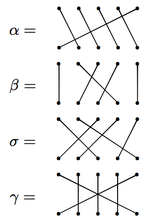
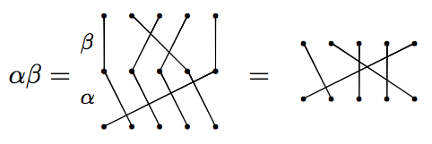
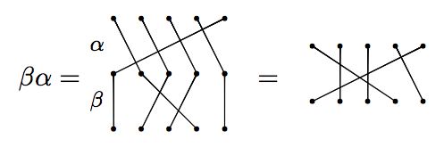
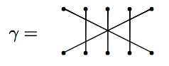
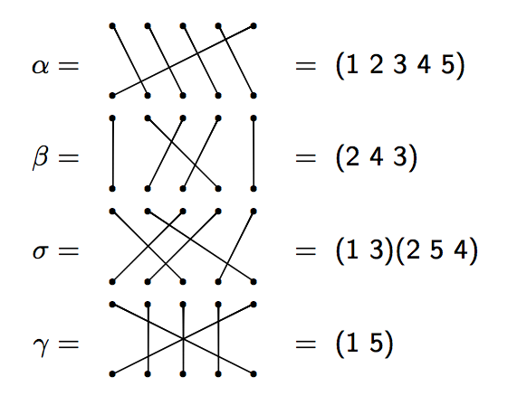

February 1, 2013
Note: Just use your arrow keys to advance the slides. Also, you can get an overview of the slides by typing "m" or go to a specific slide by typing "g".
Here are the swaps that take place during the episode:
The question is:
Can the machine be used to put everyone's mind back in the proper body if we are not allowed to use the machine on the same pair of bodies more than once?
This is not as general as the problem posed in Futurama. In that case, we needed to introduce outsiders to solve the problem. But here we can solve the problem without outsiders (as long as we have at least 2 pairs of bodies).
Let's use some math!
We can model this problem in terms of permutations (i.e., rearrangements) of numbers. It turns out that the set of all permutations of the numbers 1 through $n$ forms a "group" under composition.
A group is a set with an associative binary operation satisfying:
The group of permutations of $\{1,2,\ldots, n\}$ is called the symmetric group and is denoted by $S_n$.
One way of representing an element of the symmetric group is via permutation diagrams, which we illustrate by way of example.

Let's try multiplying.
Let $\alpha$ and $\beta$ be as on previous slide. Then

But on the other hand

We see that products of permutations do not necessarily commute (order matters).

We need to introduce a more efficient way of encoding our permutations. One such method is called cycle notation.

Let's try multiplying using cycle notation. Note: We will multiply right to left (like function composition).
Consider $\alpha$ and $\beta$ in $S_{5}$ as in the previous examples. Then
\[\alpha \beta=(1, 2, 3, 4, 5)(2, 4, 3)=(1, 2, 5).\]
Evans and Huang from the University of California, San Diego recently proved the following theorem. [arXiv]
The following permutation solves the original Stargate Switch Problem.
\[\mu=(2, 4)(1, 3)(2, 3)(1, 4)\]
Moreover, this solution is optimal in the sense that no solution with fewer than 4 moves will work.
First, easy to check that $\mu\sigma$ yields the identity:
\[\mu\sigma=(2, 4)(1, 3)(2, 3)(1, 4)\circ (1,2)(3,4)=\text{identity permutation}\]
Why is $\mu$ optimal? Well, it's easy to check that 2 transpositions (not reusing the originals and only using $1,2,3,4$) won't work. The reason why $\mu$ cannot only have 3 cycles is because of a general fact that says that the identity permutation cannot be equal to a product of an odd number of transpositions (sometimes called the Parity Theorem).
Evans and Huang also proved the following more general theorem. [arXiv]
Let $m>1$. Then the Generalized Stargate Switch permutation \[\sigma=(1, 2)(3, 4)\cdots (2m-1, 2m)\] can be undone by a product $\mu$ of $N(m)$ distinct transpositions, where for $j=4i$ \[\mu=\begin{cases}\tau \prod_{i=2}^{(m-1)/2} (j, j+2)(j-1, j+1)(j, j+1)(j-1, j+2), & \text{if }m\text{ is odd}\\ \prod_{i=1}^{m/2}(j-1, j)(j-3, j-1)(j-2, j-1)(j-3, j), & \text{if }m\text{ is even}\end{cases}\] with \[\tau=(1,3)(1,6)(4,5)(4,6)(3,5)(2,5)(1,5).\] and \[N(m)=\begin{cases}2m+1, & \text{if }m\text{ is odd (and greater than 1),}\\ 2m, & \text{if }m\text{ is even.}\end{cases}\] (The empty product for $m=3$ is interpreted as the identity permutation.) Moreover, $N(m)$ is optimal.
The previous formula looks pretty scary, but it's not too bad.
When $m=3$, we have
\[\mu= \tau=(1,3)(1,6)(4,5)(4,6)(3,5)(2,5)(1,5),\]
which consists of $N(3)=7$ transpositions.
When $m=4$, we have
\[\mu=(2,4)(1,3)(2,3)(1,4)(6,8)(5,7)(6,7)(5,8),\]
which consists of $N(4)=8$ transpositions.
I utilized the Wikipedia entries for both Stargate and Stargate SG-1.
If you'd like to know more, check out the following papers:
You might also be interested in one of my recent talks about the Futurama Theorem.
These slides were made using deck.js and MathJax. In addition, I modified Christian Perfect's deck.js template and made use of Jason B. Hill's pdiag package to create the permutation diagrams.
/
#